PLU
PLU Since it requires several steps, using Farms with Pluto can seem intimidating at first. This guide will walk you through using the Farms contract directly through BscScan.
Please understand that using BscScan to interact with contracts is not recommended for beginners. If you're not feeling confident, we suggest using the How to Use Farms guide instead.
To interact correctly with the farming smart contract, you’ll need the matching process identifier (PID) for your LP pair. For now, the easiest way to locate this is to check GitHub.
1. Open the Pluto website’s Farms code on GitHub.
2. Control/command + F and search for your pair by ticker (not project name). For exPLU, 'PLU-BUSD'.
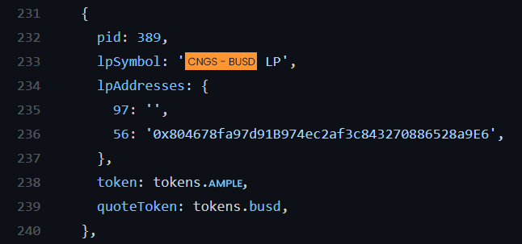3. Write down or copy the PID number—in this case 389—somewhere you can access it easily. You'll need this later.
There are a few things involved in depositing LP Tokens using BscScan. We've broken it down into steps to make it easier to follow along.
The address for the main staking contract is:
0x73feaa1eE314F8c655E354234017bE2193C9E24E
But assuming you'd like to confirm that, visit the Pluto: Main Staking Contract BscScan page. You'll see the address in the top-left. Click the pages icon to copy this to clipboard. You'll need it soon.
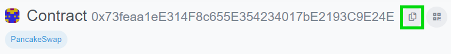You'll need to approve the smart contract for the LP Token you wish to commit to a farm before you can spend it.
1. First, open farms.ts on GitHub.
2. Control/command + F and search for your pair by ticker (not project name). For exPLU, 'PLU-BNB'

3. When you have the code for the LP pair you're looking for up, find the address after "56:". This will be your contract address.
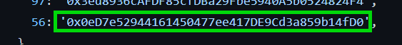1. First, visit the Pluto Farms page and search for your chosen pair using the "SEARCH" field in the top right. We're using PLU-BUSD for this exPLU.
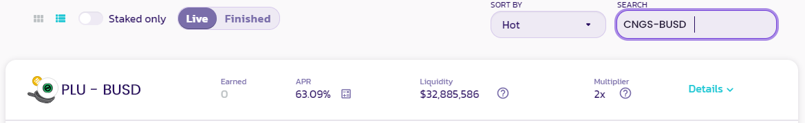2. Click Details to expand the row to show more information.

3. Click View Contract to open the smart contract on BscScan.
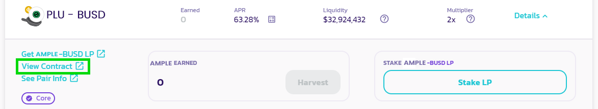Now that you have your LP Token's contract open on BscScan, you're going to approve the spending of your LP Tokens into the Farm.
1. On the LP Token's contract page, go to Contract, and then Write Contract.

Click Connect to Web3 to connect MetaMask.
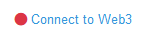Confirm the connection.
3. Under function 1, “approve”, you’ll see “spender:address”. Paste in the Main Staking Contract’s contract address you copied to clipboard earlier.
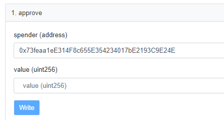5. You’re also going to need to approve the amount of LP Tokens the contract can spend. In the value field, you’ll need to enter the amount in Wei. You can use the BscScan Unit Converter to easily change your amount into Wei. Here we'll use 5 PLU-BUSD LP Tokens.
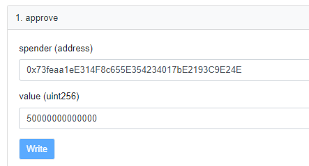You can also use -1 as the value to give unlimited spend approval. This does not mean you will spend everything by default, but only that a transaction of any size using this contract will be allowed by your wallet.
6. Click Write and accept the action in your MetaMask wallet. You’re now able to commit LP Tokens to the Farm up to the amount you’ve approved.
With the Main Staking Contract now approved to spend your LP Tokens, it's time to make a deposit.
1. Back on the Pluto: Main Staking Contract BscScan page, go to Contract, and then Write Contract.

2. Click Connect to Web3 to connect MetaMask.
3. Scroll to function 2, "deposit", and type your PID into the "_pid" field.

If you didn't copy down your PID earlier, you can learn how to get it in the Finding Farm process identifier section higher up this page.
4. Underneath _pid you'll see "_amount". Enter the amount for the LP contract to spend that you approved earlier.
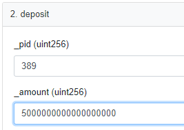5. Check the information and click Write. Confirm your action in MetaMask.
6. You can confirm your deposit worked by clicking View your transaction.
Withdrawing your LP Tokens from a Pool is very similar to making a deposit. The difference is which function you'll interact with.
1. Back on the Pluto: Main Staking Contract BscScan page, go to Contract, and then Write Contract.
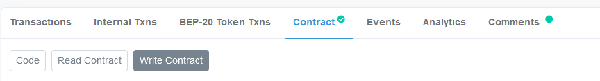2. Click Connect to Web3 to connect MetaMask.
3. Scroll all the way down to function 15, "withdraw", and type your PID into the "_pid" field.
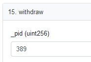If you didn't copy down your PID earlier, you can learn how to get it in the Finding Farm process identifier section higher up this page.
4. Underneath _pid you'll see "_amount". Enter the amount of LP you'd like to withdraw from the Pool.
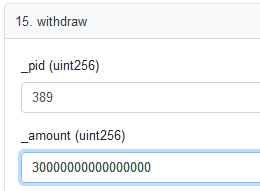5. Check the information and click Write. Confirm your action in MetaMask.
You can confirm your withdrawal worked by clicking View your transaction.
Using the emergency withdraw function allows you to draw all your funds out of a pool when no other way is working.
Using the emergency withdraw function will forfeit your PLU rewards! The Pluto team strongly suggests avoiding this function unless advised to do so officially by the Pluto team, or if you are very comfortable interacting with smart contracts and understand the underlying code.
1. On the Pluto: Main Staking Contract BscScan page, go to Contract, and then Write Contract.

2. Click Connect to Web3 to connect MetaMask.
Scroll down to function 4, "emergencyWithdraw", and type your PID into the "_pid" field.
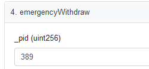If you didn't copy down your PID earlier, you can learn how to get it in the Finding Farm process identifier section higher up this page.
5. Check the information and click Write. Confirm your action in MetaMask.
6. You can confirm your withdrawal worked by clicking View your transaction.